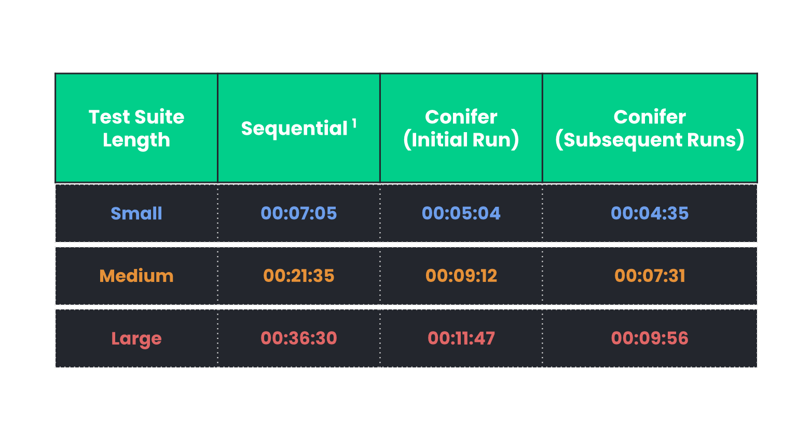
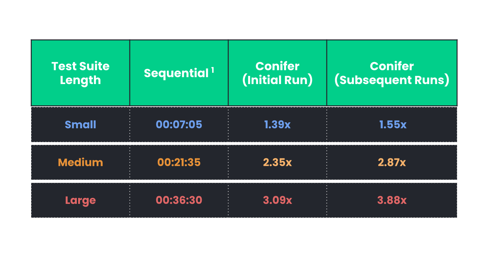
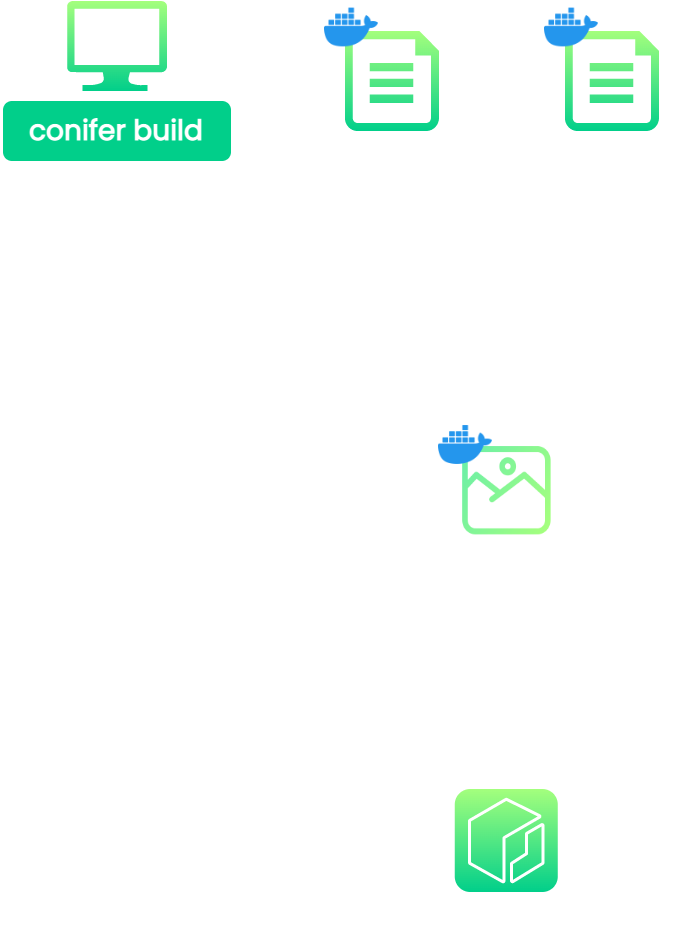
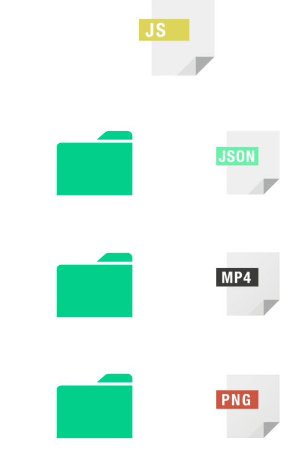

Case Study
1. Introduction
1.1 What is Conifer?
Conifer is an open-source test parallelization solution for Cypress.
Conifer automates the provisioning of a parallelized testing
infrastructure and the deployment of the user's application onto
this infrastructure. The user can then execute their test suite
across the multiple nodes of the parallelized infrastructure to
dramatically reduce the amount of time it takes to test their
application.
In this case study, we discuss the background of testing, the
problems faced by developers testing their applications, and
existing approaches to solving those problems. We then introduce
Conifer and compare it to existing solutions. Finally, we explore
how we built Conifer and discuss the key design decisions that we
made and challenges we faced.
1.2 What is Testing?
In software development, testing is the process of evaluating
whether an application is functioning as intended and ensuring that
it fulfills its design requirements. Testing allows developers to
catch bugs in an application that can then be fixed.
Testing has always been an essential element of the software
development process, but it is one that has taken many forms over
the years. Below, we briefly review the history and modern landscape
of testing to explain how Conifer fits in.
A Brief History of Testing in Software Development
In the past, QA testers performed testing manually-employees tasked
explicitly with detecting bugs in a program. A QA tester would
manually look for bugs and defects in an application, requiring the
tester to use the application, analyze its behavior, and verify any
discrepancies or inconsistent behavior. The QA tester would then
relay these defects to the development team, who would then
implement the necessary fixes to address them.
Manual testing was a complex, time-consuming, and error-prone
process. Automated testing was developed to address these
shortcomings. With automated testing, routine tests are formalized
into files/code that describe the testing procedure. Once
formalized, the testing procedure can be carried out by simply
executing these test files, usually with the help of a testing
framework. Compared to manual testing, automatic testing
dramatically reduces the effort required to test; once defined, a
test can be run repeatedly with little effort from the tester, in
shorter amounts of time.
Reducing the time and effort required to test an application yielded
many benefits. It increased the frequency that an application could
be tested and made extensive testing coverage less burdensome.
Furthermore, automated tests made it such that the same test could
be run in the exact same manner every time, increasing the
consistency of the testing process. Finally, automating the testing
process into an executable test suite enabled testing to be carried
out by anyone- including the development team.
These benefits have made automated testing a central component in
modern-day testing workflows.
Testing in the Modern Day
Modern software engineering relies on automated testing to catch
bugs throughout development. Applications are tested early on, and
testing is integrated into every stage of the software development
lifecycle. Developers play a central role in the testing process:
developers run tests themselves rather than entirely outsourcing the
responsibility to the QA team. This new paradigm of pushing testing
towards the early stages of development, known as
“shift left”, is being adopted throughout the software development industry.
The most thorough form of automated testing is called End-to-End
(E2E) testing: the process of testing an application by interacting
with it from an end-user's perspective.
End-to-End Testing
End-to-End tests attempt to ensure that an application behaves as
intended in a real-world scenario. Testing is carried out via the
application's User Interface (UI) by mimicking an end-user's
behavior- clicks, gestures, keyboard inputs, etc. The actual results
of each interaction are compared to the expected results in
real-time to ensure that the application is functioning as designed.
E2E tests subject an application to real-world scenarios, enabling
the detection of bugs that may otherwise only be detected by the
application's end-users. Because E2E tests simulate actual user
behavior, passing E2E tests gives a higher level of confidence that
all of the subcomponents of an application function together
correctly.
However, this thoroughness and high confidence come at a cost. E2E
tests aim to simulate complex real-world scenarios. This requires a
production-like environment, which means that E2E tests will
generally take more time to set up and write and more effort to
maintain relative to other types of tests. Furthermore, running E2E
tests is often slower and more resource-intensive than other types
of tests due to the complexity associated with simulating real-world
scenarios.
Modern E2E testing frameworks, such as Cypress, were designed to
address some of the limitations of E2E testing. These frameworks
simplify writing and maintaining E2E tests by providing a structured
syntax for performing common tasks such as navigating to URLs,
simulating end-user input, and inspecting the page content. By
simplifying the writing and maintenance of E2E tests, these testing
frameworks have enabled more widespread adoption of E2E testing.
Cypress, in particular, is a popular and fast-growing E2E testing
framework. It is open-source and JavaScript-based, and its design
makes writing E2E tests easy and improves the developer's testing
experience. However, even with Cypress, E2E tests can have
excruciatingly long test run times. This is due to their
resource-intensive nature, meaning that developers encounter
increasing test run times as test suites grow in size. This can
limit the utility or feasibility of E2E testing with Cypress- a
problem that Conifer is designed to solve.
2. What Problem Does Conifer Solve?
As an application grows in size and complexity, the time it takes to
test all of its components and features increases proportionally.
Each new feature may require new tests to be added to the test
suite, and the features themselves rely on an increasing number of
components whose functionality must also be tested. The underlying
components that support the application may also become more complex
and interconnected, opening up new avenues of potential failure.
This issue is even more pronounced with comprehensive testing
approaches like End-to-End (E2E) testing.
The resource-intensive nature of E2E testing makes E2E tests
particularly prone to being slow. Simulating real-world interactions
with the application requires all of the application's components to
be started, the application state to be loaded, and a browser to
interact with the test. Additional time requirements can result from
testing being carried out through the UI rather than
programmatically. As a result, as an application grows in size and
complexity, E2E testing can take an increasingly long time.
Long test-suite execution times can pose a serious problem for
developer productivity and morale. A developer's productivity is
disturbed while they wait for a lengthy test suite to finish
execution. If the test suite is long enough, developers may resort
to context-switching to another task to fill up their time. This
type of environment, where developers' focus is disrupted by
excessive idle time and/or context-switching, poses a hidden cost to
the organization in the form of developer time, stress, and overall
development team productivity.
The long time it takes to run a large E2E test suite may lead
developers not to run a test suite as often as they otherwise would.
While skipping additional test suite runs may alleviate some of the
aforementioned issues related to morale and productivity, it can
increase the likelihood of a more severe problem: bugs going
undetected.
The cost of software bug removal tends to vary depending on when the
bug is found. A bug that is discovered early on in the development
process may be trivial to fix. However, this cost increases
dramatically for bugs that make it past the coding phase. Bugs that
make it to the production environment may have catastrophic costs.
In addition to being highly complex and costly to remove, they may
damage the business by disrupting the availability of the service
and affecting end-users.
The importance of detecting bugs early has led many engineering
organizations to adopt what has become known as the “fail-fast,
fail-often” approach to software development. This approach
prioritizes detecting and addressing bugs as early as possible in
the development process. Any detected problems are quickly patched
before they have the chance to become embedded in later stages of
development or production where they have the potential to cause
financial, operational, and reputational damage to the organization.
Implementation of the “fail-fast, fail-often” strategy relies on the
early detection of bugs and thus relies on the frequent testing of
the application. Problems with the testing process, such as tests
taking a long time to execute, can disrupt the successful execution
of this strategy. This is the situation faced by Drone-On, a
hypothetical company that will be used as an example to better
illustrate Conifer's use case.
2.1 Hypothetical Use Case
Drone-On is an autonomous delivery platform on the long and winding
path to success in Silicon Valley. Drone-On's innovative product and
viral marketing strategy have captivated investors and secured
funding for expansion. However, things didn't always look so good
for the young company-it had faced significant quality control
challenges early on in its development process. A lack of robust
test coverage had resulted in bugs making it to production. These
bugs caused an outage and almost scuttled an investment round that
had been occurring at the time.
To address these issues, Drone-On's engineering team adopted the
“fail-fast, fail-often” approach. They integrated testing into every
stage of their development process. For E2E testing, they chose to
use Cypress because it is written in JavaScript, which is familiar
to all Drone-On's developers, and due to it being easy to learn how
to use the framework. Adopting these strategies resulted in the
early detection of bugs and greatly improved the reliability of
Drone-On's products, preventing damage to their growing reputation.
As Drone-On continues to expand, so has its test suite. This has
meant that E2E test suites that historically took minutes to run are
now taking half an hour. Drone-On realizes its developers do not
want to wait for all the tests to complete. While the developers are
still running their tests, Drone-On is worried the current situation
will impact morale and eventually lead to testing being performed
less often. If all developers in a company like Drone-On test less
and less during the coding phase, the chance of bugs or errors
escaping into production will increase, risking financial and
reputational damage to the company and harming its growth prospects.
Drone-On wants to mitigate these risks to continue enjoying the
benefits of implementing the “fail-fast, fail often” approach. In
order to do so, the company begins investigating how to speed up E2E
testing.
3. How to Speed Up E2E Testing
A common approach for speeding up computational tasks is
parallelization.
3.1 Executing Tests in Parallel
Like many other applications, testing can be sped up by running a
test suite in parallel. At its core, this involves running multiple
instances of the testing framework/runner simultaneously, each of
which will execute a portion of the test suite. In theory, splitting
up the work of executing the entire test suite across multiple
processes will reduce the total time necessary to run the test
suite.
Running tests in parallel has become the standard approach for
speeding up test execution. There are two high-level approaches for
parallelizing test suites: parallelization on a local machine and
parallelization over a network of multiple machines.
Local Parallelization
One option is parallelization on the developer's local machine. This
type of parallelization takes advantage of the multi-threaded
processors found in modern computers, which allow them to run
multiple programs in-parallel. The idea in Drone-On's case is to
utilize this capability to run multiple instances of the test runner
on the same machine in order to get through the test suite faster.
Local parallelization would be simple to achieve in certain testing
frameworks that support local parallelization out of the box (e.g.,
Jest, Playwright), although Drone-On's preferred testing framework,
Cypress,
explicitly cautions developers against doing so. However, testing framework-compatibility is far from the only
consideration. Another important consideration has to do with
computational resources. When locally parallelizing a task, each
instance of the parallelized task requires a multiple of the
computational resources (CPU, RAM, etc.) in order to run. If the
machine lacks these resources, bottlenecks will occur, leading to
tests executing even slower than they would sequentially and/or
potentially crashing the machine.
The issue of computational resources becomes especially significant
in the context of scaling. Drone-On has a large E2E test suite that
is growing by the day. Single-node locally parallelized systems must
be scaled vertically-by adding more resources to the
system. The company already supplies their development team with
top-of-the-line Mac and Linux machines, but the resource-intensive
nature of E2E testing makes it likely that even a modest amount of
scaling can overwhelm the resources of even the best development
computers. In most cases, vertical scaling is only possible to a
certain extent, after which even marginal increases in performance
become cost prohibitive. Drone-On cannot vertically scale further
without purchasing expensive, specially made development machines.
For Drone-On's purposes, E2E test suite execution time can only be
modestly improved via local parallelization.
These requirements and limitations make the local parallelization
approach a non-starter for Drone-On. What Drone-On needs is a
parallelization solution that can be more easily scaled.
Multi-Node Parallelization
Next, Drone-On investigates multi-node parallelization, where a test
suite is executed simultaneously across multiple machines. Each of
these machines is responsible for running a subset of the complete
test suite so that together, they run the entire test suite.
The primary advantage of multi-node parallelization is its capacity
for scaling. In contrast to locally parallelized systems which must
be scaled vertically, a system that is parallelized over multiple
nodes can be scaled horizontally-by simply adding more
nodes to the system. Horizontally scaling a system in this manner is
much more cost-effective when an abundance of computing resources is
required; it is much cheaper to purchase another unit of a modest
system than to continue adding more resources to a single system.
Multi-node parallelization requires physical infrastructure on which
subsets of a complete test suite can be run on. In the past, this
would have required Drone-On to purchase a dedicated network of
computers that would function as the parallelization infrastructure.
In the modern day, we can take advantage of cloud computing to gain
access to the necessary computing infrastructure on an as-needed
basis.
By using infrastructure provided by the cloud, we alleviate some of
the issues traditionally associated with horizontal scaling. Cloud
infrastructure removes the barrier to entry to horizontal scaling by
eliminating the upfront cost of purchasing expensive physical
infrastructure Drone-On would not have to pay fixed costs for
systems and would not need to hire in-house maintenance.
Furthermore, systems that rely on cloud-based infrastructure are
typically more flexible because they can easily be scaled up and
down as needed.
Drone-On decides to pursue a multi-node parallelization approach
using infrastructure provided by the cloud. It begins investigating
options for implementing such a solution.
4. Existing Solutions
Solutions for multi-node parallelization of E2E testing can be
divided into two main categories: Software as a Service (SaaS) and
in-house DIY implementations. Each of these solutions represents a
unique set of trade-offs. Drone-On must analyze the pros and cons of
each of these solutions and decide what combination of trade-offs
best suits their particular use case.
4.1 Software as a Service (SaaS)
SaaS testing solutions, such as LambdaTest, BrowserStack, and Sauce
Labs, are enterprise solutions that offer cloud-based automated
testing services for a price. They are fully-managed solutions that
provide plug-and-play test parallelization on servers provisioned by
the service. These feature-rich solutions support various testing
frameworks and provide comprehensive test-overview and monitoring
solutions. The flexibility, ease of use, and feature-richness of
these services make them a convenient solution for companies that
want a no-hassle solution for speeding up E2E testing.
For all of their benefits, SaaS solutions have two significant
drawbacks: high cost and lack of data ownership. The functionality
and ease of use of SaaS solutions come with a direct financial cost,
usually in the form of a high subscription fee plus overage charges.
Second, the fully-managed nature of these services means giving up
some control of data ownership. Having application/test code and
analytics in the hands of a third-party service means trusting that
service to keep your intellectual property safe. And, depending on
the industry, this can also pose compliance issues over how and
where data is shared and hosted.
For Drone-On, the benefits of a SaaS solution outweigh the
drawbacks. Drone-On is a small company with only modest funding;
committing to an enterprise solution with a monthly subscription fee
is beyond what it can afford. Additionally, Drone-On has valuable
IP, which, if leaked, would risk the company's entire business
model.
4.2 DIY Solution
Drone-On's team could opt to build their own in-house DIY solution.
At a minimum, this would involve two components: the multi-node test
parallelization infrastructure and a test-orchestrator. The
test-orchestrator would be responsible for allocating the tests
amongst the nodes of the parallel execution infrastructure,
triggering their execution, and returning results.
Drone-On could simplify the DIY process by using existing
open-source tools as their test-orchestrator. Cypress Dashboard,
Currents Dashboard, and Sorry Cypress Dashboard are
test-parallelization tools that are intended to speed up Cypress
test suites. These tools are designed to be integrated with a
Continuous Integration (CI) tool, where they are configured to run
tests in response to specific events. When paired with a
purpose-built in-house test parallelization infrastructure, they can
function as the test orchestration service component of a DIY
solution.
Building a DIY solution from scratch would give Drone-On complete
control over the feature set and allow them to customize a solution
that meets their specific needs. Depending on the test orchestration
tool, they would also retain ownership of their data, easing
concerns about loss of IP and regulatory compliance. However,
designing such a solution from scratch would require Drone-On to
invest significant time and resources. Additional resources would
need to be allocated for the maintenance of the system. For a small
company like Drone-On, this additional work would eat up a large
portion of their development team, who would otherwise be working on
building-up their core business logic.
What Drone-On needs is an open-source, easy-to-use solution that
allows it to speed up the execution of its Cypress end-to-end tests
without compromising control of its data. We designed Conifer to
fill this niche.
5. Introducing Conifer
Conifer is an open-source test-parallelization solution that was
created for companies or developers who want a simple way to run
Cypress tests in parallel using a multi-node infrastructure. Conifer
positions itself midway between a paid SaaS service and a in-house
DIY solution. It offers the following features:
-
Easy to use - Conifer provides a simple Command
Line Interface (CLI) to build, deploy, and tear down AWS
infrastructure while providing a simple live dashboard to view
while their tests run in parallel.
-
Flexible infrastructure - The infrastructure
provisioned by Conifer can be scaled up or down depending on the
user's parallelization needs.
-
Data ownership - Conifer provisions a
parallelized testing infrastructure on AWS using the user's own
AWS credentials. This infrastructure belongs to the user's own AWS
account, allowing them to retain ownership of their code and data.
-
Pay as you go - There is no fixed cost associated
with using Conifer. A company like Drone-On will only have to pay
for the resources they deploy to AWS. Billing for these resources
is based on the actual amount used, and does not have a fixed
up-front cost.
It is important to note that Conifer is not a catch-all solution.
Conifer is not nearly as feature-rich as a SaaS solution or
customized DIY platform. Conifer only supports the basic features
that are required to execute Cypress tests during local development.
It does not offer rich analytics nor does it support the range of
languages and testing frameworks that a SaaS solution would.
However, for smaller companies like Drone-On, who are looking for a
cheap, easy-to-use, low barrier-to-entry E2E test parallelization
solution that allows them to retain ownership of their own data,
Conifer represents an ideal solution. By using Conifer, such a
company can quickly begin enjoying the full benefits of applying a
“fail-fast, fail-often” strategy to their E2E testing without having
to dedicate developer time and resources that would otherwise be
focused on building out their core business logic.
Now that we have introduced Conifer, let's take a look at some of
the speed increases that we can expect to see.
6. Benchmarking Conifer

The table above compares the total test-run execution time for test
suites of differing lengths with our local machine running Cypress
versus with Conifer. These results illustrate three key takeaways:
- Conifer successfully sped up test runs across the board.
-
The degree to which a test run is sped up with Conifer depends on
the length of the test suite.
-
Subsequent test suite runs tend to be faster than the initial
runs.
[1]Keep in mind there could be variations in local test
run durations depending on local machine specs; for reference, the
device used here was a 2021 MacBook Pro (M1 Max, 32 GB RAM).

The gains in testing speed increase as the length of the test suite
increases. As you can see in Table 2, as the test suite length
progresses from small to large, the initial run speed multiplier
progresses from 1.39x to 3.09x, and the subsequent run speed
multiplier progresses from 1.55x to 3.88x. Fortunately for our
users, this means that the longest test suites are the ones that
benefit most by using Conifer.
As shown in Table 1, subsequent test suite runs tend to be faster
than the initial runs. This is because Conifer's test-splitting
algorithm utilizes meta-data from previous test runs to optimize
future runs. The next section takes a closer look at this algorithm.
7. Algorithm
Conifer allocates test files in parallel nodes using a two-stage
algorithm. In the first stage, Conifer allocates test files so that
there is an even distribution of test files amongst the parallel
nodes. In the second stage, Conifer utilizes the timing data from
the previous test run to reallocate the tests among the nodes to
optimize total test time. Together, this two-stage algorithm enables
a remarkable acceleration of the testing process.
7.1 Stage 1: Allocate by File Count
The first stage is utilized in the initial test run. During the
initial test run, Conifer naively distributes the test files to the
various nodes based on the total file count, such that each
container contains roughly the same number of tests. In the
animation above, we have a test suite that consists of eight
separate test files. This test suite is parallelized across four
nodes. The algorithm will go through each test one by one and add it
to the node that contains the smallest number of test files. This
process will continue until all of the test files have been
allocated.
Though the Stage 1 algorithm splits the files evenly amongst the
parallel nodes, it does not necessarily represent the most efficient
splitting of the test suite. This is because it can result in
different nodes having longer total runtimes than other nodes, due
to the possibility of certain test files taking longer to run than
others.
The image on the below shows that even though each node has the same
number of test files, Node 1 takes much longer than Node 2, which is
a problem because the test run is only as fast as the slowest node.

7.2 Stage 2: Allocate by Timing Data
The second stage of Conifer's test-allocation algorithm is where the
test files are allocated based on test run timing data. After the
initial run, Conifer persists metadata about each test file,
including the time each test takes to run. On subsequent test runs,
Conifer can use this test data to allocate the test files to
minimize the difference in total test time between each parallel
node.

Beginning with the longest-running test file, the algorithm will go
through each test file and add it to the node that contains the
shortest estimated total test-run time. This process will continue
until all of the test files have been allocated. We can see this
process play out in the animation above.

As we can see from the image above, this will result in nodes that
take a similar amount of time to finish execution relative to the
naive allocation.
However, it is noteworthy that the naive algorithm of Stage 1 is
responsible for the majority of the speed increase. This illustrates
the power of parallelization, allowing the user to enjoy
substantially reduced test suite runtime from the first run.
At this point, we've witnessed the extent to which Conifer is able
to speed up E2E testing and explored the algorithm that facilitates
this speed increase. Now, we're going to go behind the scenes and
take a deeper look at how Conifer is implemented.
8. Behind the Scenes: How Conifer Works
Before we discuss implementation details, it is helpful to define
the various responsibilities that must be fulfilled to successfully
parallelize an E2E test suite.
8.1 Overview of Responsibilities
At a high level, these responsibilities must be fulfilled to
successfully parallelize an E2E test suite:
-
Preparing all of the tools and provisioning the necessary
infrastructure to support parallel testing.
- Orchestrating/overseeing the testing process.
- Executing the testing code on a single node.
- Storing results of each test in persistent storage.
-
Communicating the results of the test suite to the end-user in a
useful manner.
Let's go through each of these responsibilities in detail, beginning
with preparing the components of our parallelized testing
infrastructure.
8.2 Preparing Infrastructure Components
Before we can actually perform a parallelized test run, we need to
prepare all of the components that will be used to build the
parallelized testing infrastructure.
We can divide these components into three main categories:
-
A blueprint that specifies all of the files and dependencies that
are required to run the user's application and its associated E2E
tests. In other words, a blueprint for a single node.
-
The actual physical infrastructure that will be used to run the
parallel tests.
-
Any support infrastructure that will be used to facilitate
Conifer's functionalities, such as object storage and databases.
In the following section, we will focus on the first and second
categories, beginning with the blueprint for a single node- the
Docker image.
8.3 Blueprint for a Single Node: Docker Image
Docker images are files that function as a set of instructions that
are used to run a Docker container. Conifer uses a Docker image to
specify a blueprint for a single node. The user can then use this
image to spin up identical instances of the application as Docker
containers, each representing a single node running a different
subset of the user's test suite.

A Docker container is an instantiation of a Docker image, which
bundles the application code with all the dependencies required to
run the application. Running our nodes as Docker containers allows
us to run our application and its associated tests on any computer
without worrying about configuring the correct environment. By using
the blueprint specified by a Docker image to spin up our parallel
nodes, we dramatically simplify the deployment of the user's
application on general-purpose cloud-computing infrastructure.
So far, we have a blueprint for initializing a single node of our
parallel testing infrastructure. However, this blueprint is not
useful without access to physical computer infrastructure on which
to run it.
8.4 Provisioning the Infrastructure
Conifer relies on the power of cloud infrastructure to supply the
physical computing infrastructure needed to run the parallel nodes
on which the user's application is tested. Like any tool that relies
on cloud infrastructure, we must provision this infrastructure
before it can be used.
Provisioning the necessary infrastructure is accomplished through
AWS Cloud Development Kit, or CDK. CDK acts as a wrapper for CloudFormation, providing a
higher-level interface through which AWS cloud infrastructure can be
specified. AWS's CDK was not the only option for accomplishing this
task; other tools exist for provisioning infrastructure on the
cloud. However, CDK possesses a few characteristics that gave it an
edge over the competition (making it ideal for our use case):
- It is dramatically simpler than CloudFormation.
-
It can be written in an assortment of programming languages.
Using CDK to provision our infrastructure allowed us to avoid the
complexity of creating a CloudFormation template. Creating a
CloudFormation template (a JSON or YAML file) on its own is a
challenge since we would need to configure all the necessary
networking resources like a VPC, subnets, and security groups.
Furthermore, it does not provide any glue logic for
service-to-service interactions. CDK abstracts away this complexity
into what is essentially a library of functions that can be accessed
in your choice of programming language, with support for languages
including TypeScript, JavaScript, Python, and Golang. Executing the
CDK code synthesizes a CloudFormation template, which is used by AWS
to provision the infrastructure.
At this point, the necessary preparation, configuration, and
infrastructure-provisioning is complete. The next implementation
step is to orchestrate and oversee the testing process.
8.5 Managing the Test Orchestration Process
The test orchestration process encompasses all of the actions that
must be taken to execute a single test run. However, not all of
these actions can be executed at the same time or stage; they cannot
simply be triggered as soon as the
conifer run command is entered. Certain tasks depend on
other tasks and therefore must be triggered at certain points in the
test run. Tasks also differ in the manner they are executed
(synchronous vs asynchronous) and the interval at which they are
run. To handle this complexity, we need to have a tool that will be
responsible for overseeing this process.
Within Conifer's architecture, the Command Line Interface, or CLI,
is responsible for handling the test orchestration process.
The CLI fulfills this responsibility by supporting the following
functionalities:
-
The CLI initiates the testing process in response to the
conifer run command.
-
While the test run is being executed, the CLI tracks the test
suite's execution.
-
After the test suite has finished execution, the CLI triggers the
recalculation of the test groupings.
Let's break down each of these responsibilities, beginning with the
process of initiating a test run.
Initiating a Test Run
We will first consider the requirements of initiating a test run,
and then detail our implementation choices.
Requirements
What processes need to occur to initiate the execution of a single
run of the user's test suite? We can easily identify a few crucial
steps:
-
We must spin up the nodes that the test suite is going to be run
on.
-
We must specify the specific test files that are going to be
executed on a specific node.
-
We must be able to specify the specific test run for which a test
file is executed.
-
We must save some sort of reference to each node for tracking
purposes.
As mentioned in the previous section, the Conifer CLI is responsible
for managing the test orchestration process. Let's examine how the
CLI fulfills the above requirements.
Implementation
The CLI uses the
AWS Software Development Kit
(SDK) to initiate a single test run. The SDK triggers the creation
of Elastic Container Service (ECS) Tasks, which are instantiations
of ECS Task Definitions. ECS Task Definitions specify container
configurations such as CPU/memory allocation, which image to use,
and which ports to expose. We can use the skeleton specified by an
ECS Task Definition to instantiate the nodes of our parallelized
test execution infrastructure.
When initiating a task, we have the option of specifying container
overrides. We take advantage of this capability to supply values
that each node requires to run by specifying them as environment
variables. The following environment variables are specified for
each node:
-
A file globbing pattern that dictates which test files will be
executed on the node.
-
A unique identifier for the specific test run that the node is
associated with. This identifier will be used to organize test
artifacts and metadata.
Each task spins up a container using the image we pushed to ECR.
Within each container, environment variables specify the test run
and the test files that will be executed.
Each node remains associated with the task instance that it was spun
up with. AWS assigns each of these tasks Amazon Resource Names, or
ARNs. ARNs are unique IDs that can be used to identify specific AWS
resources. Upon the conclusion of the test run initiation process,
the Task ARNs will be persisted in the Conifer-Config file. They
will be used to track the status of the tasks.
Monitoring Test Suite Execution
Requirements
At this point, we have successfully initiated E2E testing of the
user's application, and the user's test suite is executing on the
parallel nodes of Conifer's testing infrastructure.
Certain functionalities need to be triggered at certain points as
the execution of the test suite progresses. For example:
-
While the test suite is executing, we want to query the persistent
store for updates on the status of individual test files, in order
to keep the user up-to-date.
-
After the test suite has finished executing, we want to trigger
the recalculation of the test groupings.
In order to ensure that the necessary processes are run at the
correct time, we need to be able to monitor the status of the nodes
that make up our parallelized testing infrastructure. Specifically,
we need to track each node while it is running and ensure that it
executes its responsibilities and shuts down without incident.
Implementation
The CLI monitors each node using functions supplied by the AWS SDK.
Recall that each ECS Task is assigned a unique identifier in the
form of an ARN, and that these ARNs were persisted during test run
initiation. By supplying these identifiers, the SDK's
describe
functions can now be used to query the status of each node.
The CLI will poll AWS for the status of each node at a certain
interval for the duration of the test run. This process will
continue until each node returns a status of complete, upon which
the test run will be marked as complete.
8.6 Executing the Test Suite: A Single Node
Requirements
As discussed earlier, parallelized execution of the user's entire
test suite is accomplished by initializing N nodes, with each node
running a subset of the entire test suite as specified during the
initiation procedure.
Now, let's zoom in on a single node within this parallelized testing
infrastructure. Each node must perform certain actions in order to
execute its portion of the test suite successfully. At a high level,
these actions include:
- Initiating the necessary background processes.
-
Launching the user's application and ensuring that it is running.
-
Starting Cypress and instructing it to execute the necessary
tests.
Implementation
Conifer uses a simple shell script to control the flow of the test
execution process within each node. This shell script is triggered
at the creation of the node and executes the following processes
sequentially:
-
Launches a continuous file-watcher process in the background. This
specific process will be discussed in detail in the coming
section.
-
Starts the user's application using the commands specified during
the Conifer initialization process.
-
Waits for the application to finish starting up by listening to
the necessary port, as indicated by the user during the Conifer
initialization process.
-
Initiates testing by launching the Cypress framework with flags
that indicate which tests to run, using environment variables that
were specified for the node.
Running this script will execute a subset of the complete test suite
on a single node. This script is executed in each node, which
results in the entire test suite being executed amongst the
constituent nodes of Conifer's parallelized testing infrastructure.
At this point, we have managed to speed up the execution of the
user's test suite by splitting it into smaller parts and running
them in parallel across the nodes of Conifer's parallelized testing
infrastructure. The next step is to persist the results of these
tests.
8.7 Persisting Test Results
Requirements
After a test is executed, we need to store its results in some form
of persistent storage. This storage should be external to test
execution infrastructure to enable us to access the results of tests
run nodes that may no longer be active.
The process of persisting the test results can be broken down into
two main steps:
- Determining when results for a single test are available.
-
Saving the results for each test to storage outside of the testing
infrastructure.
Implementation
Cypress can be configured to generate certain “test artifacts” upon
the completion of a single test file. Cypress stores various
artifacts in different file formats, including JSON, MP4, and PNG.
Together, these artifacts function to communicate the results of the
test, including test metadata, recordings, and screenshots of any
points of failure. Because Cypress test artifacts take the form of
physical files, storing the results of a Cypress test is as simple
as exporting the files and persisting them in some form of external
storage.
How do we leverage this capability to implement persistent storage?
Recall that a file-watcher is
run in the background of each node
before the Cypress testing framework is started. The file-watcher
detects when a test artifact has been generated by watching for
changes in the standard directories where Cypress test artifacts are
saved. When a new artifact is detected, the file-watcher uploads it
to the appropriate directory in the Conifer S3 bucket.
Additionally, the file-watcher parses some of the artifacts for
select metadata to save to DynamoDB. This includes high-level
information about each individual test, such as its status and
duration. This metadata will later be used to support real-time
monitoring of a test run's progression.
The data persisted by the file-watcher, both in the S3 Bucket and
DynamoDB, will be used to communicate the results of the tests to
the end-user.
8.8 Communicating Test Results to the User
Let's discuss how we might communicate the test results back to the
end-user.
Requirements
A general process for returning results to the user can be broken
down into three main steps:
- Retrieve the test results from where they are stored.
-
Apply some form of processing to transform the data into a useful
format for display.
-
Display the results via some Graphical User Interface (GUI).
Implementation
Our goal was to give the user a high-level view of the results of
the test-run in real-time, as well as a detailed report following
the conclusion of testing. This functionality was implemented with
two separate infrastructures:
-
Live dashboard - High-level overview of the test run, communicated
in real-time.
-
HTML report - A detailed report after the test run is complete.
Live Dashboard
Real-time communication of test results is handled by the live
dashboard. The live dashboard utilizes the data persisted by the
file-watcher to keep the user up-to-date on the status of the test
run. It consists of an Express back-end server and a React front-end
web application. Recall that the CLI is responsible for managing the
test orchestration process, including monitoring the progression of
a test run. As part of this process, the CLI polls DynamoDB for
test-status updates, and sends webhooks containing these updates to
the dashboard application. Upon receipt, the updates are
communicated to the user via the React application.
The live dashboard enables real-time monitoring of the progression
of a test run, allowing the user to track the status of each
individual test within the test suite and the amount of time it took
to run. The user dashboard also provides links to download
individual test artifacts from AWS S3 as they become available.
HTML Report
After each test run, Conifer generates an HTML report and saves it
to the user's project directory. This report is much more detailed
than the data provided by the live dashboard, and represents a
complete accounting of the test run-it contains all of the
information the user would have had access to had they run the
test-suite locally.
The report generation process is initiated when the CLI detects that
all test execution nodes have powered down. This indicates that the
test run is complete. The process of generating the HTML report can
be divided into two main steps:
-
The relevant test artifacts that were produced in the test run are
downloaded to the user's computer.
-
Each artifact is parsed and aggregated into a single data
structure.
-
An HTML report is generated using the aggregated data, and is then
saved to the user's project directory.
Together, the live dashboard and HTML report function as a versatile
and user-friendly mechanism for monitoring test execution and making
sense of test results.
8.9 Final Architecture

The above image illustrates Conifer's final architecture.
-
Conifer generates the Docker image and provisions the necessary
AWS infrastructure.
-
The CLI initiates a test run and tracks each task for completion.
-
While a subset of tests are run within each task, the test
artifacts/metadata are sent to S3 and DynamoDB.
-
Finally, the artifacts and metadata are retrieved from S3 and
DynamoDB and presented to the user via the HTML report and live
dashboard, respectively.
9. Implementation Challenges
In the course of developing Conifer, we encountered certain
implementation challenges and experimented with multiple solutions.
In this section, we discuss the attempted solutions and explain some
of the decisions we made in the final implementation.
The first implementation challenge we faced was determining the
appropriate cloud-infrastructure to run our E2E tests.
9.1 Running Cypress Tests on the Cloud
Initial Design: AWS Lambda
After the consolidated Docker image has been built and sent to ECR,
how can we run the tests in a parallelized manner on the cloud?
The first approach we explored was using Lambda functions. Lambda is
an event-driven compute service that lets you run code without
needing to provision or manage any resources. We had envisioned
utilizing Lambda functions to parallelize the test execution. Each
Lambda function could execute each test file in the test suite
asynchronously. The concept would be to invoke N number of
Lambda functions, where each function runs one test file in the
complete test suite.
Lambda has many characteristics that made it uniquely suitable for
our use case:
-
It possesses the capacity for infinite parallelization, so it is
highly scalable.
-
It represents a fully-managed solution, so we do not need to
manage the deployment of AWS resources.
-
It is a proven solution. This approach has successfully
parallelized end-to-end testing on Selenium, another popular
testing framework.
We also considered a few possible drawbacks, but ultimately
concluded that these drawbacks would not significantly affect
Lambda's suitability for our use case. These potential drawbacks
included:
-
Container size limit - Lambdas have a container size limit of
10 GB. This used to be a bigger problem when the size limit was 512
MB. We deemed the new limit to be suitable for most applications.
-
Function timeout - Lambdas have a timeout of
15 minutes. While this is an issue for certain applications. In theory, it
is an issue, but because there is potential to parallelize
infinitely, it is improbable that a single Cypress test file would
take more than 15 minutes.
-
Cold start times - Can vary based on what the Lambda function is
running. It could pose an issue, but we must validate it with
real-world data.
Issues with Lambda
During implementation with Lambda, we encountered an issue relating
to a low-level display driver dependency for Cypress. Upon further
research, this issue appeared unsolvable as there is still an
open issue
on Github directly related to using Lambda with Cypress, dating back
to 2018.

We also explored a handful of workarounds that attempted to bypass
this problem. These were typically very complex and were always
implemented to support the testing of a specific application. These
workarounds were not intended to be used as a part of a general
purpose testing infrastructure. Therefore, they were not suitable
for use with Conifer.
An Alternative: Elastic Container Service (ECS)
Since we appeared to have reached the end of the road with Lambda,
we considered ECS as an alternative. ECS had a few characteristics
that made it desirable for our use case. Being a container
orchestration service for Docker images, it is able to run our
nodes. Additionally, it can scale easily in a manner that would
allow us to parallelize the execution of our test suite sufficiently
and fulfill the same responsibilities that we had originally
envisioned using Lambdas.
Unlike Lambdas, which are entirely serverless, ECS offers two launch
types that we can use to run our nodes.
-
ECS with EC2 - A self-managed solution using an EC2 instance as a
task runner.
- ECS with Fargate - A serverless, fully-managed solution.
We took the bottom-up approach by trying to get Cypress to work on
an EC2 instance. Initial development began with EC2 as a task
runner, with an immediate goal of ensuring that nodes can run the
tests and with the intent to verify that the same problem with
Lambda did not apply. Using EC2 as the task runner made it possible
to take advantage of the relative ease of debugging and
troubleshooting in a self-managed solution for the initial
application development.
Ultimately, we decided to stay with EC2 as our task runner. In
addition to simplifying the development process, using EC2 as the
task runner achieved the substantial speed gains that Conifer aimed
to provide for E2E testing. Implementation with a fully managed
solution via Fargate was deferred as a future optimization.
At this point, we have solved the challenge of running our Cypress
E2E tests on the cloud. This leads us to the next problem: how do we
return the test results back to the user?
9.2 Sending Test Results to the User
Normally, the user could view their test results in real-time
through their terminal. However, since Conifer executes the tests on
the cloud, users lose this feature. This posed an obvious issue:
What's the point of testing if you cannot see the results? So, we
considered other ways of communicating test results to the users.
One way is to create a test report where the user can see the
results through an HTML file after the test run is complete. This
could be achieved natively through Cypress with its built-in
reporters. Unlike viewing the test results through the terminal's
output, these reports can be retrieved from each node and sent to
the user.
There is one minor problem: the reports are generated per each test
file, meaning that the user has to go through hundreds of reports to
see their test results.
We managed to solve this problem easily by using a custom reporter
plugin called mochawesome-report-generator (marge) which can
aggregate all the tests and generate a final HTML report. However,
before we can aggregate the individual test results, we need them in
a single location.

The above image illustrates the situation after our test suite has
finished execution. The test results/artifacts were produced for
each test, but they reside within the node where the specific test
file was executed. Therefore, we don't have access to them and
cannot use them to generate the report for the end-user. In order to
send any results to the user, we need first to retrieve the test
results from each node and place them in one centralized location.

The easiest approach would be to defer uploading the test artifacts
until after all of the tests within a single node have finished
running. The conclusion of test execution on a node implies that the
Cypress test runner has finished running, and thus, that all of the
artifacts have been generated. Running a script after this to upload
the test artifacts would be a trivial process.
Real-Time Results
But this is not good enough. We want Conifer to be able to
communicate the test results to the user in real-time, which is
present when running a Cypress test suite locally. Accomplishing
this requires us to retrieve the test results from each node in
real-time as those test results are generated.
We arrived at two main approaches:
-
Synchronous - We can attempt to insert the desired functionality
directly into the test execution process, so the test results are
uploaded immediately after a test file runs but
before the next test file run begins.
-
Asynchronous - We can create a separate process solely responsible
for uploading the test results as they are created.
Synchronous Approach
The first approach would be to direct Cypress to synchronously
upload the test artifacts for a single test file immediately after
that file finishes running. Within the cypress-config file, Cypress
allows us to extend the internal behavior of Cypress with code
blocks that can be executed at certain events within the testing
process, including subsequent to the completion of an individual
test file's execution.
This approach is complex due to the potential for existing code in
the user's cypress-config file, some of which may be critical for
supporting the proper execution of their test suite (e.g., seeding a
database, fetching database data, etc.). Thus, the necessary code
would need to be stitched into a preexisting cypress-config file in
one of two approaches:
- Require the user to add the necessary code themselves.
-
Inject the necessary code into the user's cypress-config file.
Upon further investigation and given the config file's complexity
and importance in successfully executing the user's test suite, we
deemed this approach unviable and too risky.
Asynchronous Approach
The second approach would be to enable the asynchronous streaming of
the test artifacts by implementing a file-watcher. This program
would be separate from Cypress and run asynchronously in the
background while the Cypress tests are executed.

In order to function correctly, the file-watcher would need to
detect when a test artifact has been created and fully written (as
indicated by it no longer changing). Once these conditions are
satisfied, the file-watcher would initiate uploading the specific
test artifact to persistent storage.
This approach would require no additional work from the user, but it
is more complex and constitutes an additional potential point of
failure in the testing infrastructure.
Decision: File-Watcher
Both of these approaches achieved the necessary functionality. The
first approach would be undesirable because it burdens the end-user
with needing to stitch the configuration files together. This is
particularly true when the user may not even be familiar with the
configuration themselves, making the synchronous approach a
non-starter.
We decided that the implementation of real-time streaming of testing
artifacts would be best achieved through the use of the asynchronous
file-watcher. Although the file-watcher approach was more of a
technical challenge, it supports the necessary functionality without
requiring additional work from the user.
Now that we are acquainted with Conifer and the decisions that went
into building it, let's explore some features we would like to add
in the future.

10. Future Work
There are several additional features that we would like to add in
the future in order to extend its functionality.
10.1 Dynamic Allocation of Tests

We would like to investigate other test allocation algorithms that
may be useful to users with certain use cases. One such algorithm is
through the dynamic allocation of tests. The animation above
illustrates the approach. Rather than calculate test groupings
before initiating a test run, this approach would dynamically
allocate tests by utilizing a queue of sorts to feed tests to the
nodes as they become available. This approach may prove useful in
situations where accurate or up-to-date timing data is unavailable
such as during the first run and in frequently or rapidly changing
test suites.
10.2 Go Serverless
We would like to implement a serverless option for test
parallelization using AWS Fargate. A successful implementation may
allow us to achieve “infinite parallelization” in a manner similar
to what was discussed using lambdas. Additionally, a severless
implementation would further streamline the deployment process by
removing the need to specify certain parameters such as the EC2
instance type.
10.3 Improve Efficiency and User Experience
To improve Conifer's testing efficiency and the end-user experience,
we would like to add the following features:
-
Fail fast option - The option to stop test execution as soon as
the first failing test result is found.
-
Flaky test detection - The developer can detect, flag, and track
flaky tests from the Cypress test runs.
-
Live dashboard analytics - Give developers a richer experience on
their test results.